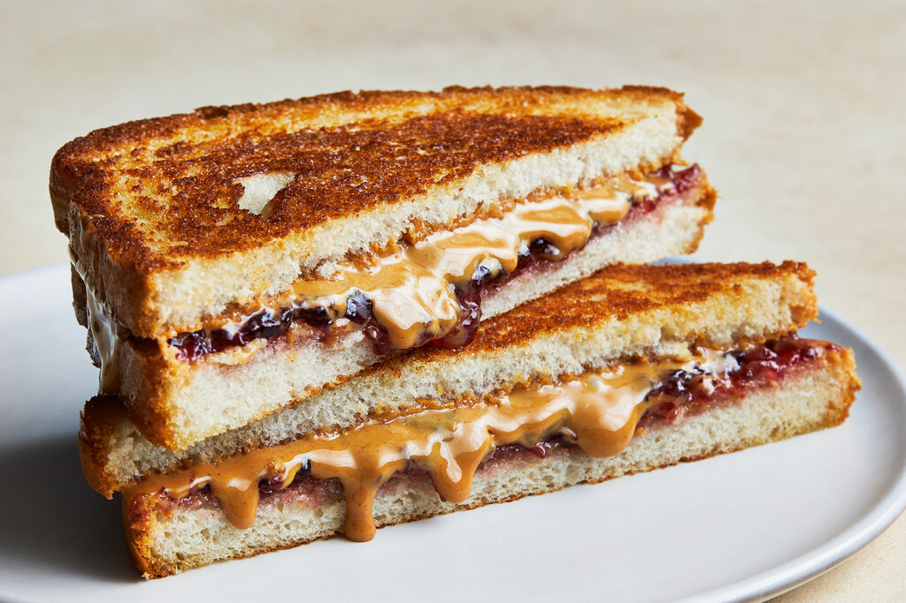

Home
Toasted PB&J

A simple recipe to warm up one of your favorite childhood meals!
Prep Time: 2 minutes
Cook Time: 2 - 3 minutes
Ingredients
- 2 Slices of bread
- Softened stick butter
- Penut butter
- Jelly (which ever you like)
Directions
- Toast the two slices of bread.
- Lightly spread butter on one side
- On the other side apply peanut butter and jelly
- Combine the bread to make the sandwich
- Enjoy!